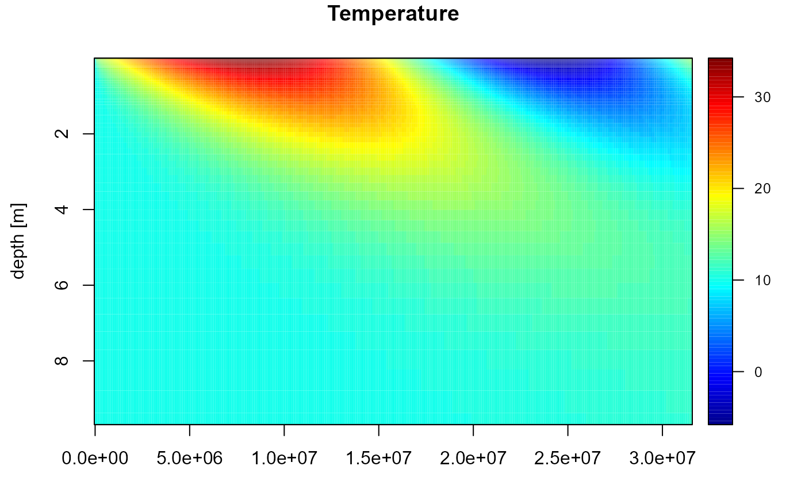

TempSED_plot.Rdimage2D generates a 2-D image (x=time, y=depth) of the dynamic output (temperature (color variable) versus time (x) and depth (y)).
matplot1D plots vertical temperature profiles versus depth.
plot plots the output of 0D variables (one figure each).
# S3 method for class 'TempSEDdyn'
image2D(z, which = NULL, subset = NULL,
time_unit = c("sec", "hour", "day", "year"),
xlab = time_unit, time.origin = NULL, plotWater = FALSE,
colkey = list(cex.clab = 0.8, line.clab = 0.5, cex.axis = 0.8),
...)
matplot0D (x, ...)
# Default S3 method
matplot0D(x, ...)
# S3 method for class 'TempSEDdyn'
matplot0D(x, ..., select = NULL, which = select,
time_unit = c("sec", "hour", "day", "year"),
xlab = time_unit, lty = 1)
matplot1D (z, ...)
# Default S3 method
matplot1D(z, ...)
# S3 method for class 'TempSEDdyn'
matplot1D(z,
type = "l", col = "grey", lty = 1, ...)
# S3 method for class 'TempSEDdyn'
plot(x, ..., select = NULL, which = select,
time_unit = c("sec", "hour", "day", "year"),
xlab = time_unit, ylab = NULL, lty = 1, las = 1)object of class TempSED generated by TempSED_run1D.
The name(s) of the 1-dimensional output to be plotted versus time.
either a logical expression indicating elements or rows to keep, or a vector of integers denoting the indices of the rows to keep. Missing values are taken as FALSE
When not NULL, will use time labels rather than seconds to label time. (use Sys.setlocale(LC_TIME) to change how the date appears on the x-axis).
The time unit of the x-axis. The default is "sec" (the unit of the model).
When TRUE, will also plot the properties of the overlying watercolumn (height and temperature).
parameters passed to the plot function
A list with specifications of the color key. The default is to have a smaller title (cex.clab) and axis labels (cex.axis), the key title positioned close to the color key (line.clab), See colkey
Any argument passed to the functions image2D .
fAirTempYr <- function(t)
return(15 + 15*sin(2*pi*t/86400/365)) # dgC
fSolarRadYr <- function(t)
return(150*(1+0.8*sin(2*pi*t/86400/365))) # W/m2
times <- seq(from = 0, to = 365*86400, by = 86400)
Tout <- TempSED_run1D(
T_ini = 10,
times = times,
f_Airtemperature = fAirTempYr,
f_Solarradiation = fSolarRadYr)
image2D(Tout)
